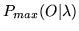

Use
HINIT is invoked via the command line
HInit [options] hmm trainFiles ...
This causes the means and variances of the given hmm to be
estimated repeatedly using the data in trainFiles
until either a maximum iteration limit is reached
or the estimation converges.
The HMM definition can be contained within one or more macro
files loaded via the standard -H option. Otherwise, the
definition will be read from a file called hmm.
The list of train files can be stored in a script file if required.
The detailed operation of HINIT is controlled by the following
command line options
- -e f
- This sets the convergence factor to the real value f.
The convergence factor is the relative change between successive
values of
 computed as a by-product
of the Viterbi alignment stage (default value 0.0001).
- -i N
- This sets the maximum number of estimation cycles
to N (default value 20).
- -l s
- The string s must be the name of a
segment label. When this option is used, HINIT searches
through all of the training files and cuts out all segments with
the given label. When this option is not used, HINIT assumes that
each training file is a single token.
- -m N
- This sets the minimum number of training examples so
that if fewer than N examples are supplied an error is
reported (default value 3).
- -n
- This flag suppresses the initial uniform
segmentation performed by HINIT allowing it to be used
to update the parameters of an existing model.
- -o s
- The string s is used as the name of the output
HMM in place of the source name. This is provided in HINIT
since it is often used to initialise a model from a prototype
input definition. The default is to use the source name.
- -u flags
- By default, HINIT updates all
of the HMM parameters,
that is, means, variances, mixture weights
and transition probabilities. This
option causes just the parameters indicated by the flags
argument to be updated, this argument is a string containing one
or more of the letters m (mean), v (variance),
t (transition) and w (mixture weight). The presence of a
letter enables the updating of the corresponding parameter set.
- -v f
- This sets the minimum variance (i.e. diagonal element of
the covariance matrix) to the real value f The default value
is 0.0.
- -w f
- Any mixture weight or discrete observation probability
which falls below the global
constant MINMIX is treated as being zero.
When this parameter is set, all mixture weights are floored
to f * MINMIX.
- -B
- Output HMM definition files in binary format.
- -F fmt
- Set the source data format to fmt.
- -G fmt
- Set the label file format to fmt.
- -H mmf
- Load HMM macro model file mmf. This option
may be repeated to load multiple MMFs.
- -I mlf
- This loads the master label file mlf. This option
may be repeated to load several MLFs.
- -L dir
- Search directory dir for label files (default
is to search current directory).
- -M dir
- Store output HMM macro model files in the directory dir.
If this option is not given, the new HMM definition will overwrite
the existing one.
- -X ext
- Set label file extension to ext
(default is lab).
HINIT also supports the standard options -A,
-C, -D, -S, -T, and -V as described
in section 4.4.
Back to HTK site
See front page for HTK Authors